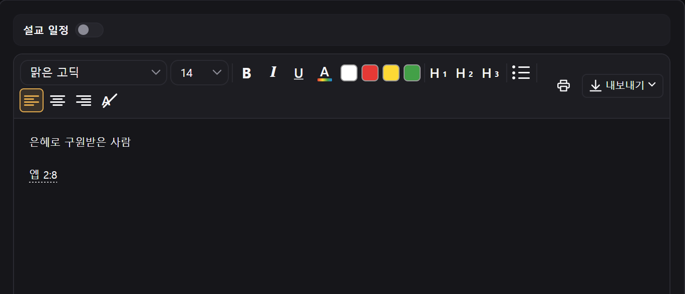
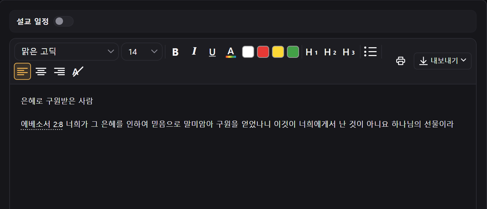
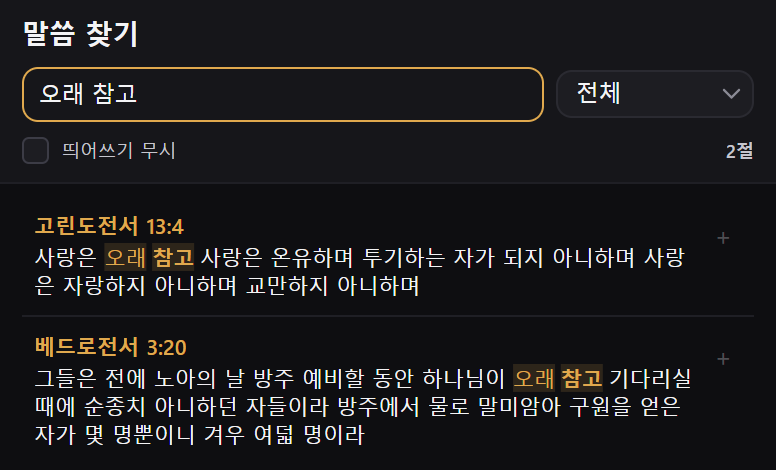
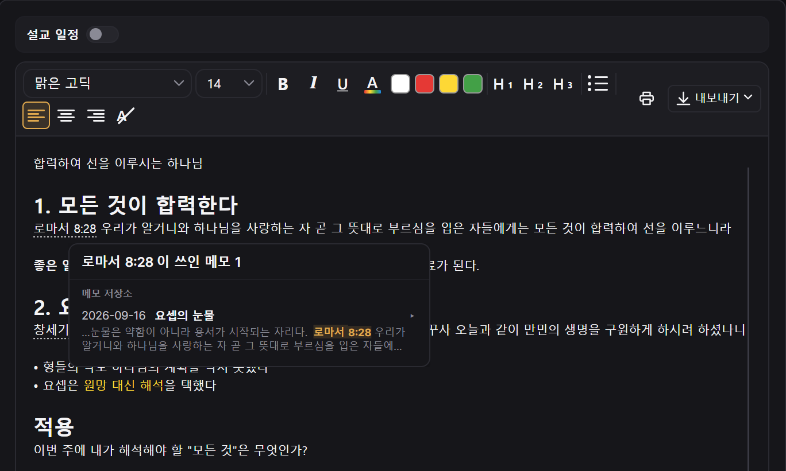
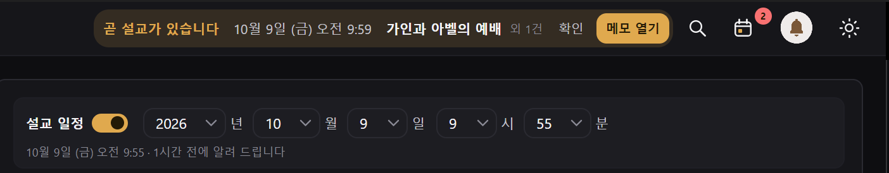
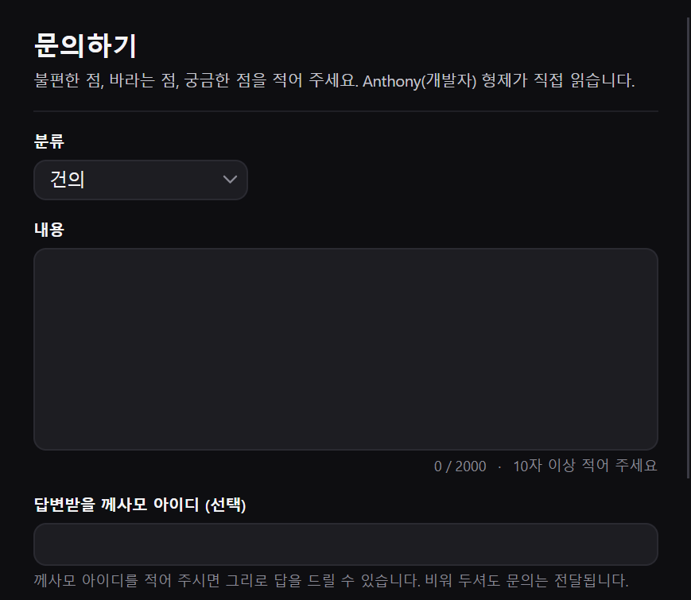

HAGAH
설교 메모 전용 앱
여호와께서 이같이 내게 이르시되 큰 사자나 젊은 사자가 그 식물을 움키고 으르렁거릴הָגָה 때에 그것을 치려고 여러 목자가 불려 왔다 할지라도 그것이 그들의 소리로 인하여 놀라지 아니할 것이요 그들의 떠듦을 인하여 굴복지 아니할 것이라 이와 같이 나 만군의 여호와가 강림하여 시온 산과 그 영 위에서 싸울 것이며
하가הָגָהHAGAH
사자는 먹이를 움킨 채 낮게 으르렁거립니다. 목자들이 몰려와 소리쳐도 놀라지 않고, 떠들어도 물러서지 않습니다. 이사야는 그 낮고 깊은 울림을 하가라 불렀습니다.
성경은 같은 낱말로 묵상을 말합니다. 히브리 사람의 묵상은 조용히 생각을 비우는 일이 아니라, 받은 말씀을 입에 물고 낮은 소리로 되뇌고 또 되뇌는 일이었습니다. 사자가 먹이를 놓지 않듯, 말씀을 붙들고 놓지 않는 것입니다.
세상의 소리가 아무리 커도 빼앗기지 않는 한 구절, 그것을 곱씹어 내 것으로 삼는 일이 하가입니다.
받은 말씀을 놓지 않고
되새기고 쌓아 가는 곳, Hagah
FEATURESHagah 둘러보기
-

말씀 넣기 · 1장절만 치세요
설교 중에 "에베소서 2장 8절"이 들리면, 성경을 찾지 말고
엡 2:8이라고만 치세요.책 이름은 줄여 써도 됩니다. 요, 롬, 엡처럼 익숙한 약칭을 그대로 알아듣습니다.
-

말씀 넣기 · 2스페이스 한 번이면 말씀이 들어옵니다
장절을 치고 스페이스를 누르면 구절 본문이 통째로 들어옵니다. 성경을 넘기며 옮겨 적는 사이에 설교를 놓칠 일이 없습니다.
요 3:16-18처럼 여러 절도 한 번에 들어옵니다.성경 본문: 개역한글판 · 출처: 대한성서공회
-

말씀 찾기장절이 기억나지 않아도 괜찮습니다
설교에서 "오래 참고"라는 말씀만 귀에 남았다면, 위쪽 돋보기를 누르고 기억나는 낱말을 쳐 보세요. 그 말이 든 구절이 창세기부터 요한계시록까지 차례대로 나옵니다.
찾은 구절 옆의
+를 누르면 쓰던 메모에 바로 들어갑니다.낱말 여러 개를 띄어 치면 모두 들어 있는 구절만 찾습니다 · 단축키 Ctrl+Shift+F
-

말씀 연결같은 말씀을 들었던 날을 이어 줍니다
메모에 넣은 구절에 마우스를 올려 보세요. 그 구절이 쓰인 다른 메모가 날짜와 함께 나타납니다. 오늘 메모의 로마서 8:28이 지난달 「요셉의 눈물」 설교와 나란히 놓이고, 누르면 바로 그 메모로 갑니다.
메모가 쌓일수록, 따로 들었던 설교들이 한 말씀 안에서 서로 이어집니다.
-

설교 일정 알림설교 1시간 전에 먼저 알려 드립니다
메모 위의 '설교 일정'을 켜고 날짜와 시간을 정해 두세요. 시간이 다가오면 화면 위에 "곧 설교가 있습니다" 알림이 뜹니다. '메모 열기'를 누르면 준비해 둔 그 메모가 바로 열립니다.
준비한 메모를 찾느라 허둥대지 않아도 됩니다.
-

문의하기개발자가 직접 읽습니다
불편한 점, 바라는 기능, 궁금한 점을 앱 안에서 바로 보내 주세요. 건의나 오류 같은 분류를 고르고 내용을 적으면 끝입니다.
께사모 아이디를 남겨 주시면 그리로 답을 드리고, 비워 두셔도 문의는 그대로 전달됩니다.
여러분의 한마디가 다음 업데이트가 됩니다.
-
설교 메모날짜별로 적고
폴더로 정리 -
말씀 넣기구절을 치면
본문이 바로 -
말씀 연결같은 구절을 쓴
예전 메모까지
지금 시작해 보세요
설치할 때 ‘Windows의 PC 보호’ 창이 뜨면 추가 정보 → 실행을 눌러 주세요. 새로 나온 앱이라 뜨는 안내이니 안심하셔도 됩니다.
Apple M 시리즈 칩(M1 · M2 · M3 · M4)용입니다. 내 Mac의 칩은 Apple 메뉴 → 이 Mac에 관하여에서 확인할 수 있습니다.
Intel 칩 Mac용입니다. 내 Mac의 칩은 Apple 메뉴 → 이 Mac에 관하여에서 확인할 수 있습니다.
Mac에서 처음 열 때
Hagah는 Apple 앱 스토어 밖에서 나누는 앱이라, 처음 한 번은 Mac이 실행을 막습니다. 아래 순서로 한 번만 허락해 주시면 그다음부터는 그냥 열립니다.
- 내려받은 Hagah 파일(.dmg)을 열고, 나온 창에서 Hagah 아이콘을 응용 프로그램 폴더로 끌어다 놓습니다.
- 응용 프로그램 폴더에서 Hagah를 엽니다. ‘확인할 수 없습니다’ 창이 뜨면 완료를 누릅니다.
- Apple 메뉴 → 시스템 설정 → 개인정보 보호 및 보안으로 가서 아래로 내립니다.
- ‘Hagah’이(가) 차단되었습니다 옆의 그래도 열기를 누르고, Mac 암호나 Touch ID로 확인합니다.
- 다시 묻는 창에서 열기를 누르면 끝입니다.
macOS 12(Monterey)에서는 3번이 시스템 환경설정 → 보안 및 개인 정보 보호 → 일반이고, 단추 이름이 확인 없이 열기입니다.
‘손상되었기 때문에 열 수 없습니다’라고 나오면 터미널을 열고 아래 한 줄을 붙여 넣은 뒤 다시 열어 주세요.
xattr -dr com.apple.quarantine /Applications/Hagah.app
업데이트는 앱 안에서 받으므로 이 과정을 다시 할 필요가 없습니다.